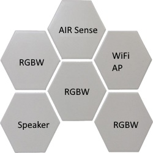

Strategic Themes
- Open Hardware + Open Firmware
- Unified Local Control via a Builtin Matter-Capable Hub
- Single Matter Interface, Modular Intelligence
- Modular Design for Infinite Customization
- Ceiling-mounted Ecosystem to Eliminate Clutter
- Scalable for Home, Office, and Industry

Illustrative representation of a Nelees One modular system
Vision
Nelees One aims to redefine the smart home by starting where others don't look: the ceiling. Our goal is to embed intelligence, responsiveness, and connectivity into modular ceiling-mounted devices that eliminate the chaos of scattered gadgets and closed platforms.
By focusing on openness, community-driven development, and Matter-first compatibility, we want Nelees to become the backbone of ambient technology — not just for lighting or sensors, but for full-stack ambient computation and automation.
In the long term, Nelees One will enable an ecosystem of interoperable modules: smart lighting, distributed audio, HVAC control, environment sensing, edge compute nodes, and even micro-servers — all mounted out of the way, in a unified tessellated design.
This isn't just a smart ceiling. It's a smarter way to build systems that live with us.
Product Overview
Nelees One is a modular ceiling-mounted smart device system that integrates multiple smart home functions into a unified, open platform. Designed around a Matter-capable core unit, it allows high-density modularity with consistent form and function.
- Hexagonal Modules: Lighting, sensors, audio, and compute units in tessellated layouts
- Unified Power + Data: 24V centralized bus powering all modules with smart handshake interface
- Plug-and-Play Expansion: Add modules as needed without rewiring or reconfiguration
- Local-first Automation: Real-time response and automation processed by the core unit
- Open SDK: Community-developed tools for customization, diagnostics, and module creation
Core Features
Lighting & Audio
- RGBW lighting for main illumination and ambient effects
- Stereo/Mono Bluetooth speakers
Environmental & Presence Sensing
- CO₂, VOC, Humidity, Temperature, CO, NO₂, Light sensors
- Presence sensors
- Security cameras
- Microphones
Control & Connectivity
- Integrated Matter hub
- Zigbee compatibility
- IR blaster for legacy device control
- RF controller for non-smart device integration
- VoIP integration
Automation & Intelligence
- Built-in voice assistant with AI capabilities
- IR heating panels
Community & Ecosystem
- Partnerships with SONOS and Unify for ecosystem integration
- Dev kits for DIY makers and hackers
- Online platform for system configuration and plug-and-play design
Use Cases
- Residential: Automated lighting, air quality tracking, distributed audio scenes
- Commercial: Environmental monitoring, presence-aware automation, secure communication systems
- Hospitality: Personalized room controls, adaptive ambience, energy-efficient automation
Security & Privacy
- Local-only processing for automation and voice commands
- Encrypted communication between modules and central hub
- Microphones and cameras with physical shutoff options
Reliability & Power
- Passive thermal design for module longevity
- Typical module consumption: 3–5W
- Magnetic hot-swap mounting for easy upgrades or repairs
Developer Experience
- Online portal for system design, deployment, and diagnostics
- Contribute firmware or hardware modules via GitHub
- Custom module support via SDK and hardware dev kits
Technical Overview
- MCU Options: ESP32 (for cost-efficient modules) and nRF52 (for advanced BLE/Thread functionality)
- Firmware Stack: ESP-IDF and Zephyr RTOS, with Matter SDK integration
- Connectivity: Wi-Fi, BLE, Thread; primary Matter interface on core unit
- Hardware Design: Modular PCB stack per hex-unit, 24V DC power backbone, standardized connector spec
- Enclosure: Hexagonal industrial-grade plastic or aluminum housing, magnetically mounted
- Development Environment: Open-source toolchains, PlatformIO + VSCode support, KiCad for hardware design
- Debug & Diagnostics: Serial, USB-C, and wireless OTA updates
By centralizing capability and distributing intelligence across a standardized platform, Nelees One reduces hardware clutter while enabling more powerful, private, and adaptable smart environments.